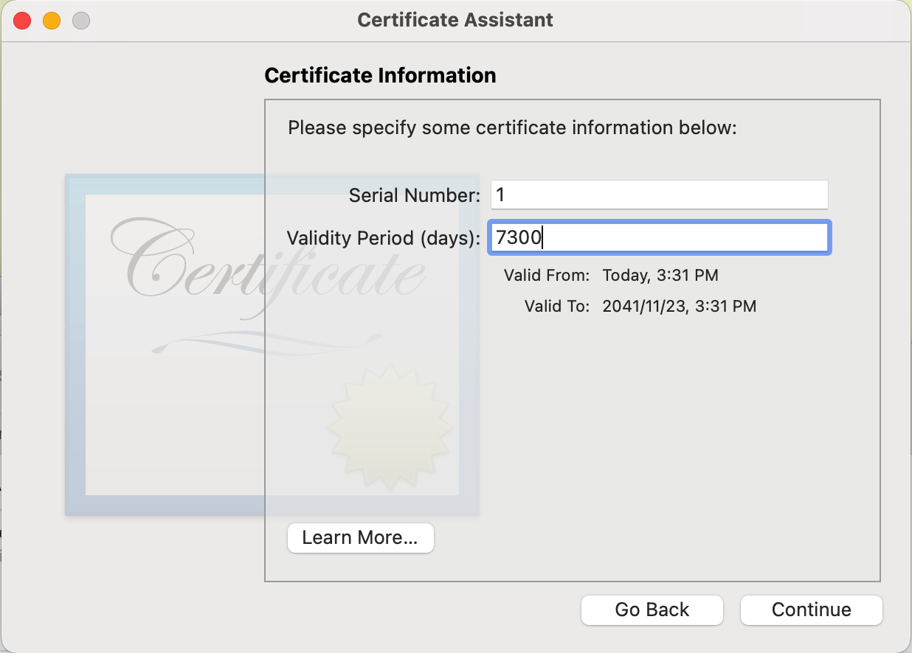
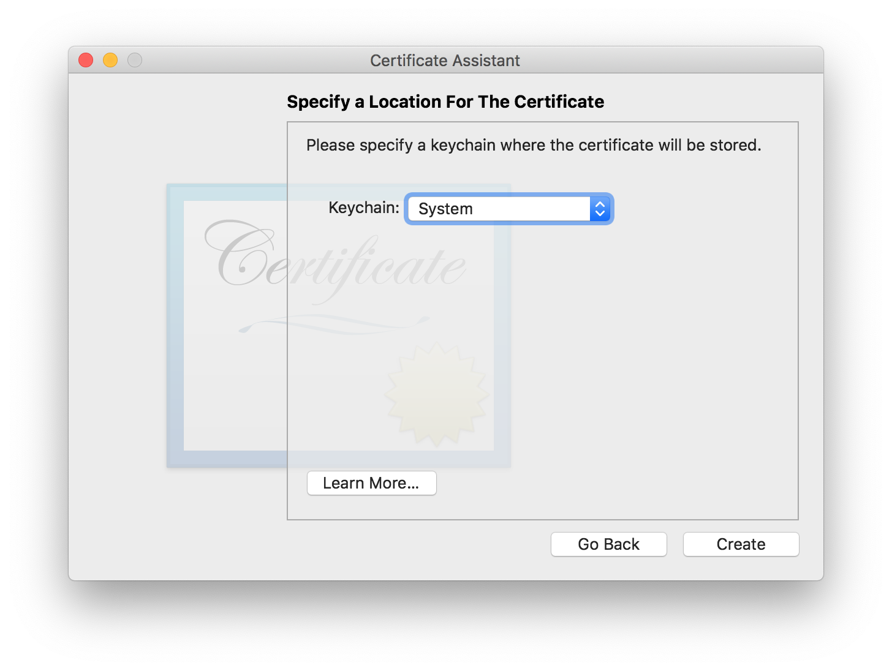
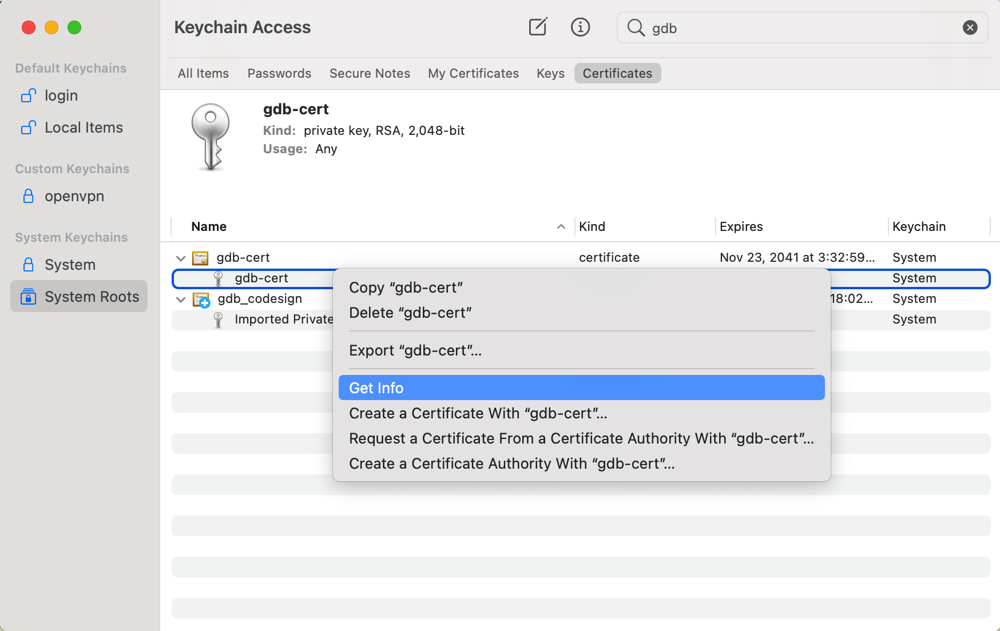

How to make gdb works on Mac
How to make gdb works on Mac
If you just install gdb by brew and expect it works out-of-box, you must be upset and angry at last. Because it will pop up a message as:
1 | Unable to find Mach task port for process-id 23330: (os/kern) failure (0x5). |
If you search how to solve it by Google, you might lucky see a post at first matched result. I see some pride answers from Apple fun.
I am a pretty long time, almost 20 years Apple fun too from my first iPod classic. But I think Apple product is far from a friendly environment to a programmer.
To solve this issue. The solution is the following.
launch Keychain Access.app, and select ‘Certificate Assistant > Create a Certificate’ from the menu.
select ‘Code Signing’
set Validaty Period to 7300, longest time I can tried out.

set Keychain location to ‘System’

back the first screen of Key Access.app, and find the new certificate, right-click the item and select ‘Get Info’

change ‘Code Signing’ to ‘Always Trust’
key in ‘security dump-trust-settings -d’ command in Terminal.app. You will see something like
1 | $ security dump-trust-settings -d 44|1 ↵ 10080 15:28:31 |
create a gdb.xml file
1 | <?xml version="1.0" encoding="UTF-8"?> |
run ‘codesign –entitlements gdb.xml -fs gdb-cert $(which gdb)’
run ‘codesign -d –entitlements - $(which gdb)’, you will see output same content as gdb.xml
if you still got gdb stuck when you run
Probably you need to run ‘sudo DevToolsSecurity -disable’ and key in ‘set startup-with-shell off’ when gdb launched to console (after you killed the gdb is stuck).
Above is what I learned this afternoon.
All articles in this blog are licensed under CC BY-NC-SA 4.0 unless stating additionally.